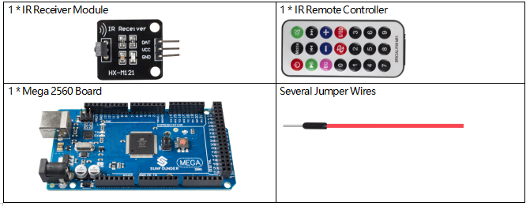

2.20 IR Receiver Module¶
Overview¶
In this lesson, you will learn to use IR Receiver Module. IR Receiver is a component with photocell that is tuned to receive to infrared light. It is almost always used for remote control detection - every TV and DVD player has one of these in the front to receive for the IR signal from the clicker. Inside the remote control is a matching IR LED, which emits IR pulses to tell the TV to turn on, off or change channels.
Components Required¶
Component Introduction¶
An infrared-receiver is a component which receives infrared signals and can independently receive infrared ray and output signals compatible with TTL level. It’s similar with a normal plastic-packaged transistor in size and is suitable for all kinds of infrared remote control and infrared transmission.


Schematic Diagram

Fritzing Circuit¶
In this example, we wire up the left pin (-) of IR Receiver Module to GND, the middle pin to 5V, and the right pin (S) to pin 11.

Code¶
The codes use the library IRremote.h, about how to import library,please refer to 4.1 Add Libraries.
After uploading the codes to the Mega2560 board, you can see that the current value of the pressed button of IR Remote Controller displays on the serial monitor.
Code Analysis¶
There are two important parts to notice in this program.
①The code uses an extra file decodeKeyValue.ino to decode the values in class decode_result into key value.The file will be opened together with the main file.
②IR Remote function is achieved by calling IRremote.h library related functions.
#include <IRremote.h>
Library Functions：
IRrecv(int recvpin)
Create IRrecv object to control a IR Receiver module.
decode_result
In this kit, results are usually 8-digit hexadecimal numbers starting with 00FF. You can check decodeKeyValue.ino file in the sample file.
void enableIRIn()
Initialize the IR receiver module.
int decode(decode_results *results);
Decodes the received IR message. Returns 0 if no data ready, 1 if data ready. Results of decoding are stored in results.
void resume()
Restart for receiving an other value.
Phenomenon Picture¶